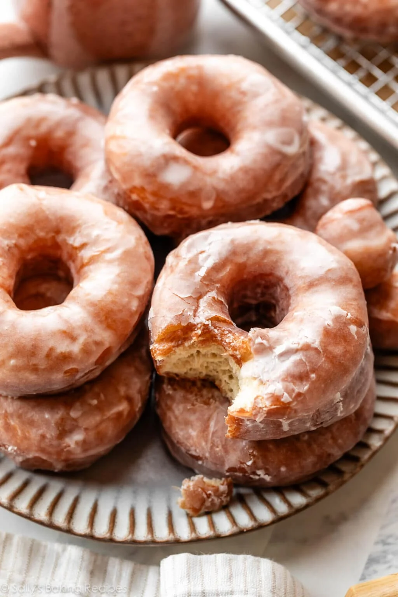

Donuts
Home

Delicious gooey donuts
With that signature bakery taste and texture, doughnuts from a doughnut shop are incredibly delicious and
indulgent. When you can’t pick up your favorite doughnuts, why not make them at home instead? They’ve always
been a baking bucket list recipe for me, and today I’m taking you on a deep dive into homemade
doughnuts—fried, sugary, old-fashioned, and comforting. I originally shared this recipe in 2016, and I now
have more step-by-step photos and a video tutorial to guide you.
Ingredients
- 1 cup (240ml) whole milk, warmed to about 110°F (43°C)*
- 2 and 1/4 teaspoons (7g) instant or active dry yeast (1 standard packet)*
- 1/3 cup (65g) granulated sugar, divided
- 2 large eggs
- 6 Tablespoons (85g) unsalted butter, melted and slightly cooled
- 1 teaspoon pure vanilla extract
- 1/4 teaspoon ground nutmeg
- 1/2 teaspoon salt
- 4 cups (500g) all-purpose flour (spooned & leveled), plus more as needed
- 1-2 quarts vegetable oil
Directions
- Prepare the dough
- Knead the dough
- Let dough rise
- Shape doughnuts
- Fry em up
- Glaze em!